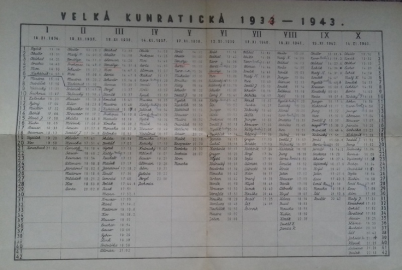
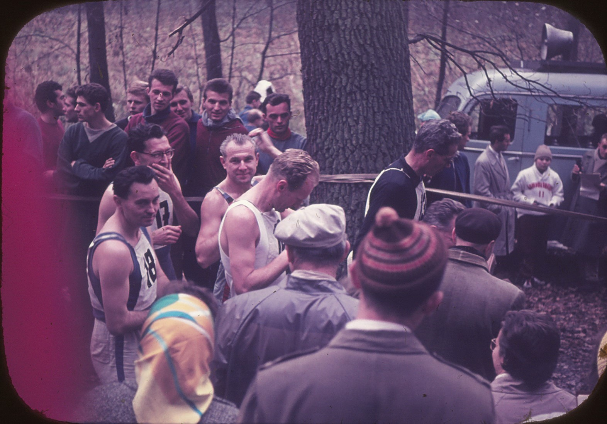

Veterán
Velké kunratické
Časopis určený veteránkám,
veteránům a všem příznivcům
legendárního závodu
Číslo: 1
listopad 2020
Milé veteránky, vážení veteráni!
Letos poprvé po dlouhých 86 letech se v listopadu nebude konat Velká kunratická, slavný běžecký závod, jehož historie sahá do třicátých let minulého století. Je téměř jisté, že se neuskuteční ani v plánovaném prosincovém termínu. Jestli v březnu, nebo snad jindy v příštím roce, je zatím ve hvězdách.
Musíme se s tím smířit. Závod, jehož tradici nepřerušila ani světová válka, bude pozastaven kvůli malinkatému, neviditelnému nepříteli. Jako drobnou náplast na toto zklamání přijměte první číslo časopisu, věnovaného tomuto závodu. Věřím, že vás alespoň trochu potěší, minimálně do té doby, než se znovu postavíte na start.
Slavná historie, kterou si píšeme sami
Rok co rok se druhou listopadovou neděli potkáváme na startu Velké kunratické. Je to závod, k němuž máme silný citový vztah, závod, který jsme si zamilovali. Někomu se možná zdají tato slova nadnesená, ale o jejich pravdivosti není nutno se přesvědčovat žádnou anketou, stačí se podívat každý rok do startovní listiny. Jména v ní se opakují s pravidelností až neuvěřitelnou, mnohá z nich už po několik desetiletí.
Proto zde pro vás, veteránky a veteráni, nebudeme psát o kouzlu podzimního lesa, o každoročním setkávání s přáteli, o mimořádné náročnosti tohoto běhu ani o jeho neopakovatelné atmosféře. Jednak to bylo řečeno i napsáno už nesčetněkrát, ale hlavně to každý z nás dávno ví a poznal na své kůži nejméně dvacetkrát, mnozí třicetkrát či čtyřicetkrát, ti nejvytrvalejší (měřeno věrností a počty absolvovaných startů) i více než padesátkrát. Pamětníkům kraluje současná jednička v mužské startovní listině, Josef Vonášek s obdivuhodnými šedesáti absolvovanými starty. A tím se dostáváme k tomu, čím především se bude „Veterán Velké kunratické“ zabývat. Bude to historie, kterou nepíší jen rekordmani a vítězové. Jejími významnými aktéry jste vy všichni, pravidelní účastníci, veteránky a veteráni – i když jste nikdy nevyhráli.
Aby vzpomínky nezavál čas…
Vedle historických faktů, které jsou příznivcům VK dobře známy, přinesl každý ročník řadu zajímavostí, které by neměly zůstat nepovšimnuty. Byla by škoda, kdyby upadly v zapomnění. Proto se v dnešním prvním čísle vrátíme o desítky let proti proudu času a podíváme se, jak vypadala Velká kunratická před 20, 40, 60 a 80 lety. Dvacetiletou periodu volíme záměrně. Měřeno optikou Velké kunratické, jde o jednu běžeckou generaci – vždyť právě 20 let (minimálně!) je třeba k tomu, aby se z nováčka stal veterán. Což jinými slovy znamená, že přinejmenším ročník 2000 všichni současní veteráni pamatují – každý z nich měl v té době na svém kontě nejméně jeden start v kategorii dospělých.
Bonusem úvodního čísla bude ohlédnutí za prvním ročníkem v roce 1934. Při té příležitosti si s určitou lítostí uvědomuji, že tento časopis měl být založen o čtvrtstoletí dříve. Pamětníci a zakladatelé Velké kunratické už bohužel nežijí, přesto jim dáme slovo prostřednictvím vzpomínek, které napsali do ročenek, vydaných k některým jubilejním ročníkům. Především jejich památce je věnováno toto naše povídání.
Odkud bereme informace?
Především ze startovních a výsledkových listin jednotlivých ročníků, které pečlivě uchovává statistik Velké kunratické Ing. Pavel Frček, dále z ročenek, v nichž jsou mimořádně zajímavé a historicky cenné dokumenty, včetně osobních vzpomínek zakladatelů (některé jsme už dnes zařadili do prvního čísla), a také z vyprávění pamětníků-veteránů, kteří si náš časopis už nepřečtou. Zde mám na mysli především osoby nejpovolanější: Přemysla Novotného, Karla Šerpána a Jiřího Horáčka – tři muže, kteří řadu let oblékali dres s prestižní jedničkou na hrudi.
Své vzpomínky má ale každá a každý z vás. Budeme velmi rádi, když se o ně podělíte s ostatními čtenáři. Ale o tom více v posledním odstavci.
Jak dál s „Veteránem VK“?
O tom, zda úvodní číslo bude mít pokračování, rozhodnete vy, čtenáři. Máte-li zájem o opětovné nahlédnutí do minulosti, dejte nám, prosím, vědět. Setká-li se „jednička“ s kladnou odezvou, vydali bychom další číslo v květnu příštího roku, na srazu veteránů VK. V příštím čísle bychom si připomněli Velkou kunratickou před 10 roky (77. ročník v roce 2010) a předchozí ročníky znovu s dvacetiletou periodou, neboli roky 1990, 1970, 1950. Také v čísle 2 chystáme bonus ze samé prehistorie Velké kunratické, tentokrát bychom se podívali na 2. ročník v roce 1935.
Výzva veteránům
1/ Budeme rádi za každou odezvu, ať kladnou, tak i zápornou, abychom věděli, zda má smysl pokračovat v našem snažení. Uvítáme všechny vaše připomínky, rady, nápady, návrhy na vylepšení.
2/ Máte-li nějaké osobní vzpomínky, fotografie nebo historické relikvie, které se vztahují k rokům 2010, 1990, 1970, 1950, případně k dalším ročníkům, na které přijde řada později, a chcete-li se o ně podělit s ostatními čtenáři, dejte nám, prosím vědět. Fotografie bychom si zapůjčili a oskenovali, osobní vzpomínku pošlete mailem, případně napište dopis nebo zavolejte. Po dohodě otiskneme buď přímo váš text, nebo jej zpracujeme podle vašeho vyprávění, například formou rozhovoru.
Velmi se těšíme na vaše reakce.
Luděk Sedlák, veterán VK (47 startů)

Legendární „pergamen“, obsahující kompletní výsledky prvních deseti ročníků.

Start 27. ročníku v roce 1960 na fotografii z archivu veterána VK Kamila Wichterleho.
Rok 2000 – 67. Velká kunratická
Počasí, účast a celkové výsledky
Chladná neděle s dopoledními teplotami mezi 2°C a 4°C přivítala celkem 2929 startujících (přihlášených bylo 3234) na poslední Velké kunratické v uplynulém tisíciletí. Vítězem hlavní mužské kategorie se stal Roman Skalský ze Slovanu Mariánské Lázně. Jeho výkon 11:21,6 byl skvělý, rekord Vlastimila Zwiefelhofera 10:58,9 z roku 1979 však ani zdaleka neohrozil. I tak se 67. ročník zařadil mezi ty nejkvalitnější: pět mužů se dostalo pod hranici 12 minut a průměrem deseti nejrychlejších časů (11:58,1) patřilo roku 2000 páté místo v dosavadní historii. Na ženské trati byla nejrychlejší Pavla Havlová, potřetí za sebou.
Vetránům kralovali Pechek, Buchar a Růžičková
Kategorie mužů-veteránů VK se opět významně rozrostla. Startovní listina 67. ročníku obsahovala 346 jmen, z nichž se na startu objevilo 311, což představovalo více než jednu pětinu celkového počtu závodníků na hlavní mužské trati.
Mezi veterány už popáté startoval Miloš Smrčka, ale svou obdivuhodnou rekordní sérii měl teprve před sebou. V roce 2000 běžel po zranění a skončil až třetí, prvenství z předchozího ročníku obhájil František Pechek, tentokrát ve skvělém čase 12:59,5. Jeho výkon byl o pouhou minutu horší (o 1:03,2, abychom byli přesní) než při jeho vítězství v hlavní kategorii v roce 1976. Skvěle běžel i Aleš Špičák, také jeho výkon 13:10,8 patří k nejrychlejším časům ve veteránské historii. O mimořádné kvalitě obou jmenovaných svědčí jejich 19. a 28. místo v absolutním pořadí. A jedna zajímavost na závěr: František Pechek je dodnes jediným běžcem, kterému se podařilo zvítězit v absolutním pořadí kategorie mužů a po letech i v kategorii veteránů.
Kombinované hodnocení ovládl už pošesté vrchlabský borec a nositel slavného krkonošského jména Jan Buchar, opět s obrovským náskokem. Jeho výkon v 67 letech byl obdivuhodný: 15:34,2. V tomto hodnocení byl nejlepší při každém svém veteránském startu a rokem 2000 jeho unikátní série ještě nekončila.
Zatímco mužská veteránská kategorie měla v roce 2000 více než třicetiletou tradici, ženy veteránky se ve výsledkové listině objevily teprve potřetí. Právo startu v kategorii veteránek si v předchozích ročnících vyběhalo sedm žen, startovalo jich šest a vítězkou se stala hned při svém prvním startu Milada Růžičková, která o necelých 5 vteřin předčila loňskou vítězku Růženu Sochorcovou.
Znovu bez prestižní jedničky
Bohužel, už podruhé za sebou na startu chyběl veterán s prestižním číslem 1, které je určeno závodníkovi s nejvyšším počtem absolvovaných startů. Jednička na hrudi ve Velké kunratické je pro běžce velkým vyznamenáním a celoživotním sportovním vítězstvím. Může se jí dočkat i ten, kdo nebyl vrcholovým běžcem a svým nadanějším soupeřům se po celý život díval na záda. Má to ale i jednu nevýhodu – vytoužené jedničky nedosáhnete dřív než na samém konci své sportovní kariéry.
Jedničku pro rok 2000 si vyběhal Jiří Novák-Jonny, který v roce 1998 startoval pošestapadesáté. Měl snahu dostihnout rekordmana v počtu startů Přemysla Novotného (ten měl 58 startů, poslední v roce 1997), ale v tomto případě už bylo přání otcem myšlenky. Čeká to bohužel každého z nás, že jednou už to nepůjde…
Veteráni sbírají starty, stárnou a zpomalují
Zajímavé srovnání jednotlivých ročníků poskytují hodnoty průměrného výkonu veteránů a jejich průměrný věk v daném roce, neboli údaje, z nichž se vychází při sestavování tabulky kombinovaného hodnocení. Průměrný věk sice snižují nově příchozí veteráni a také odchody běžců, kteří se svou aktivní účastí končí, všichni ostatní však oproti předchozímu ročníku o rok zestárnou. Protože většina veteránů se s ukončením závodní činnosti jen těžko smiřuje a na start se vrací „dokud to je jen trochu možné“, startovní pole veteránů pomalu, ale jistě stárne a s tím souvisí i pozvolné zhoršování průměrného výkonu – navzdory skvělým časům nejrychlejších borců. Jsou samozřejmě výkyvy, většinou dané počasím a s ním souvisejícím stavem závodní trati. V roce 2000 byl průměrný věk startovního pole 56 let, 11 měsíců a 24 dní, průměrný čas 20:42,1, což v kombinované tabulce představovalo 100 + 100 bodů. Pro zajímavost: loňské průměrné hodnoty (2019) byly 62 let, 3 měsíce a 11 dní, průměrný výkon byl 24:12,4, neboli o tři a půl minuty horší.
Další zajímavosti z výsledkové listiny
67. ročník VK skončil triumfem rodiny Pechků. Na Františkovo prvenství mezi veterány navázal jeho syn Petr, vítěz v kategorii dorostenců a za několik let i vítěz v kategorii dospělých Jinak ve výsledcích dorostenecké kategorie najdeme mnoho dalších jmen, která známe z výsledkových listin naší kategorie: Gregoriades, Sysel, Štěpán, Opolecký, Popel, Havlín, Urban, Ezechiáš. Možná ne všichni, ale troufám si tvrdit, že většina z nich jsou potomky současných veteránů. V kategorii juniorů absolvovali svůj teprve druhý start Jan Musil a Marek Németh. Po nepřerušené sérii účastí se v loňském roce zařadili už mezi veterány.
Na závěr vzpomínky na rok 2000 se začtěte do stránky věnované výsledkům a připomeňte si, kteří borci jsou už 20 let stálicemi na předních místech veteránské kategorie.
VYČTENO Z VÝSLEDKŮ 67. ROČNÍKU 2000
VK 2000 – veteráni (311 start.) Kombinované hodnocení 2000
| 1. František Pechek | (1953) | 12:59,5 | 1. Jan Buchar | (1933, 26 startů) | 243,538 |
| 2. Aleš Špičák | (1955) | 13:10,8 | 2. Josef Pejsar | (1923, 37) | 236,852 |
| 3. Miloš Smrčka | (1954) | 13:48,2 | 3. Antonín Leheček | (1931, 23) | 232,416 |
| 4. Jiří Suchý | (1959) | 13:57,2 | 4. Karel Matzner | (1929, 29) | 229,111 |
| 5. František Peterka | (1949) | 14:09,6 | 5. Vladimír Řápek | (1938, 27) | 228,745 |
| 6. Pavel Novák | (1953) | 14:13,4 | 6. Josef Zlatníček | (1934, 27) | 228,412 |
| 7. Vladimír Michalička | (1960) | 14:14,2 | 7. Miroslav Javorský | (1936, 29) | 227,296 |
| 8. Jan Martinec | (1951) | 14:19,4 | 8. Karel Urban | (1939, 25) | 225,721 |
| 9. Robert Fremr | (1957) | 14:25,4 | 9. Karel Šerpán | (1931, 49) | 224,659 |
| 10. Zdeněk Laciga | (1952) | 14:41,7 | 10. Alois Horčičák | (1936, 25) | 224,295 |
VK 2000 – veteráni 40-59 VK 2000 – veteráni 70+
| 1. František Pechek | (1953) | 12:59,5 | 1. Karel Matzner | (1929) | 20:00,4 |
| 2. Aleš Špičák | (1955) | 13:10,8 | 2. Josef Pejsar | (1923) | 20:36,2 |
| 3. Miloš Smrčka | (1954) | 13:48,2 | 3. Zdeněk Švec | (1930) | 20:42,3 |
VK 2000 – veteráni 50-59 VK 2000 – veteránky (6 start.)
| 1. František Peterka | (1949) | 14:09,6 | 1. Milada Růžičková | (1952) | 6:29,6 |
| 2. Václav Kroupar | (1947) | 14:55,1 | 2. Růžena Sochorcová | (1941) | 6:34,2 |
| 3. Antonín Fischer | (1944) | 15:56,5 | 3. Miloslava Ročňáková | (1945) | 7:00,2 |
| 4. Anna Klausová | (1942) | 7:49,2 |
VK 2000 – veteráni 60-69 5. Dagmar Janoušková (1948) 9:00,6
| 1. Jan Buchar | (1933) | 15:34,2 | 6. Míla Dolečková | (1936) | 10:42,7 |
| 2. Vladimír Řápek | (1938) | 16:44,2 |
3. Karel Urban (1939) 16:58,3 Muži – průměry: 18.11.1943 / 20:42,1
Počty startů po 67. ročníku – muži: 58 – Přemysl Novotný, 56 – Jiří Novák, 53 – Jaroslav Obešlo, 52 – Viktor Trkal a Jiří Horáček, 51 – Jaroslav Šilhavý, 49 – Karel Šerpán, 48 – František Čmelinský a Ivo Hanousek, 46 – Jiří Třešňák. Ženy: 29 – Miloslava Ročňáková, 25 – Anna Klausová, 24 – Dagmar Janoušková, 23 – Míla Dolečková a Růžena Sochorcová, 22 – Jitka Tučková, 21 – Milada Růžičková, 20 – Jitka Smrčková.
Rok 1980 – 47. Velká kunratická
Počasí, účast a celkové výsledky
Vydatný déšť před závodem se projevil zvýšeným stavem vody v potoce, rozbahněnými tratěmi, ale i značnou absencí předem přihlášených účastníků. Z celkového počtu 4447 přihlášených jich bylo v cíli klasifikováno „jen“ 3819. K tomu patrně přispěla i mimořádně nízká teplota: oficiální údaj z pražského Klementina uvádí v den závodu minimální hodnotu –0,5°C, maximum bylo +3,3°C. Novinkou byl altán u startu a cíle hlavní kategorie. Dnes máme pocit, že na svém místě stojí odjakživa, ale dobový text ve výsledkové brožurce nás usvědčí z krátké paměti – letos je altánu teprve 40 let.
Velké kunratické na přelomu 70. a 80. let kraloval nedostižný Vlastimil Zwiefelhofer. V roce 1980 startoval v hlavní mužské kategorii popáté a popáté také s převahou zvítězil. Jeho výkon byl 11:16,7, druhého Petra Ondráška porazil o třičtvrtě minuty. Na ženské trati byla nejrychlejší Jindra Červená z VS Praha.
Veteráni 1980: legendy minulosti, současnosti i budoucnosti
Už pojedenácté bylo čelo startovního pole vyhrazeno veteránům, neboli běžcům, kteří absolvovali Velkou kunratickou nejméně dvacetkrát. Ve výsledkové listině veteránů 47. ročníku je uvedeno 42 jmen. Tehdy se veteránům říkalo zakladatelé, vždyť mezi nimi bylo nemálo těch, kteří pamatovali zrod tohoto unikátního závodu a čtyři z nich stáli dokonce na startu prvního ročníku v roce 1934. Jejich jména stojí za připomenutí – byli to Jaroslav Obešlo (ročník 1913, letošní výkon 24:22,1), Vladimír Ondrášek (1911, 24:59,7), Otakar Zelenka (1911, 30:15,1) a Klement Kerssenbrock (1912, 31:07,5).
Už navždy zůstane jednou z nejvýraznějších postav historie Velké kunratické Jaroslav Obešlo, který se v roce 1980 pyšnil obdivuhodnou bilancí: z dosavadních 47 ročníků šestkrát vyhrál a pouze jedinkrát vynechal – v roce 1939 kvůli nemoci. Dnes je už téměř zapomenutou skutečností, že ani tato unikátní bilance nezaručila Obešlovi prestižní číslo 1, od prvopočátků veteránské kategorie určené závodníkovi s nejvyšším počtem absolvovaných startů. V předchozích ročnících nosil jedničku na hrudi jeho kamarád Jiří Kabátník, přestože na startu celkem čtyřikrát chyběl. Bylo to v letech 1949 až 1952, kdy se MUDr. Kabátník (ročník 1905) stal jednou z mnoha obětí zinscenovaných politických procesů. Veteráni (kteří se v té době všichni osobně znali – dnes něco nepředstavitelného) se usnesli, že tyto čtyři zmeškané starty se Jiřímu Kabátníkovi započítají a že jedničku ponese právě on. Osud tomu chtěl, že v roce 1980 mu jeho zdravotní stav poprvé znemožnil aktivní účast, takže na startu 47. ročníku číslo 1 chybělo. Ne naposled…
Dalším veteránem, který se nesmazatelně zapsal do historie Velké kunratické, je Karel Šerpán. K svému budoucímu (a dosud platnému) rekordu v počtu startů měl v roce 1980 ještě daleko, zato úžasnou vítěznou šňůru protáhl na devět prvenství v řadě. Jeho pozice mezi veterány byla neotřesitelná, tentokrát dosáhl času 14:19,7 a druhého Chudomela nechal za sebou o celou minutu.
Ještě jednoho běžce ze startovní listiny veteránů z roku 1980 musíme zmínit. Měl číslo 50, mezi veterány startoval poprvé a dosáhl času 17:35,4. Jako jediný z tehdejší veteránské sestavy běhá dosud, od roku 2017 s číslem 1. Jeho jméno je Josef Vonášek.
Díky iniciativě Přemysla Novotného byla v roce 1980 poprvé sestavena tabulka kombinovaného hodnocení veteránů, ve které se procentuálně hodnotil čas a věk podle dnešních pravidel (v předchozích letech se prováděl prostý součet pořadí věku a výkonu). Tato tabulka se nedochovala, pokusili jsme se ji však znovu sestavit podle výsledkové listiny. Bohužel naše rekonstrukce není zcela přesná, protože u některých starších veteránů neznáme přesné datum narození (jen ročník), navíc jsme i po letech našli určité nesrovnalosti ve výsledcích (několik běžců není uvedeno ve výsledkové listině veteránů, pouze ve věkových kategoriích nad 50 nebo nad 60 let). Berte ji proto především jako vzpomínku na naše předchůdce, kteří startovali v kategorii veteránů před 40 lety.
Jak tenkrát běhali dnešní veteráni
Řada současných veteránů startovala v roce 1980 v nejmladší mužské kategorii do 29 let. V ní pomyslný bronzový stupínek vítězů (slovo pomyslný můžeme podtrhnout, výsledky se v té době nevyhlašovaly a i ti nejlepší se je obvykle dovídali s velkým zpožděním) patřil Vladimíru Pechkovi (12:23,1), nejmladšímu bratrovi známějšího veterána Františka. Ten skončil tentokrát pátý (12:41,3). Připomeňme si další budoucí veterány, kteří figurovali v první padesátce výsledkové listiny: 6. Zdeněk Zajíc (v roce 2019 měl 39 startů) 12:48,0, 10. Vrdlovec (25) 12:58,5, 12. Špičák (42) 13:00,9, 15. Laholík (48) 13:04,1, 17. Podroužek (44) 13:09,8, 27. Flašar (43) 13:25,0, 37. Laciga (46) 13:36,3. Z dalších pak mimo jiné: 59. Michalička (35) 13:49,5, 66. Vévoda (37) 13:53,3, 70. Řežábek (41) 13:55,5, 74. Smrčka (42) 13:56.8, 75. Suchý (40) 13:57,2. Většina těchto borců dosud běhá a počty startů tak nadále navyšuje. Spoustu jmen dnešních veteránů najdeme samozřejmě na čelných místech i v dalších věkových kategoriích. Namátkou v kategorii 30 – 39 let: 1. František Dvořák (42) 13:24,5, 3. Zdeněk Müller (25) 13:48,6, 4. Jan Jurák (38) 13:49,1, 5. Karel Čech (54) 13:53,3, 6. Václav Kroupar (37) 13:54,0; v kategorii 40 – 49 let: 3. Arnošt Poisl (53) 14:18,4, 4. Kerner (46) 14:18,9, 5. Janoušek (32) 14:20,2, 7. Šusterka (22) 14:24,1, 10. Mráz (42) 14:46,5, v kategorii 50 – 59: 2. Karel Matzner (42) 15:32,1. Z těchto dnes už starších veteránů dnes bohužel běhá jen málokdo a mnozí už dokonce nejsou mezi námi.
Další zajímavosti z výsledkové listiny
Nezasvěcený čtenář bude pravděpodobně překvapen věkovým složením startovního pole. Zatímco v kategorii mužů do 29 let bylo v cíli klasifikováno 1047 závodníků a v kategorii 30 až 39 let 722 závodníků (v současné době jsou tyto dvě kategorie sloučeny), mezi padesátníky startovala jen stovka běžců a výsledková listina nejstarší kategorie nad 60 let, která byla vypsána teprve podruhé, měla pouhých 24 jmen (pravda, k nim ještě můžeme připočítat 11 veteránů, kteří byli ve výsledcích uvedeni zvlášť). Pouze tři účastníci ročníku 1980 překročili sedmdesátku. Dvěma nejstarším – Vladimíru Kazdovi z Vodních staveb a veteránu prof. Zdeňku Slámovi bylo (dnes bychom řekli „pouhých“) 76 let.
Kategorie žen-veteránek Velké kunratické v roce 1980 ještě neexistovala, ale některé ženy už pilně střádaly starty, aby později mohly tuto kategorii založit. Např. v kategorii přes 30 let skončila na 2. místě Anna Klausová (v roce 2019 měla 42 startů), 4. Miloslava Ročňáková (46), 18. Míla Dolečková (25), v kategorii do 29 let 26. Milada Růžičková (36). V kategorii mladších dorostenek najdeme na nejvyšší příčce jméno Miriam Kautové (později provdané Stewartové), v budoucnu mnohonásobné vítězky hlavní kategorie žen i kategorie veteránek. Můžeme jen litovat, že Miriam v posledních letech v Kunraticích nezávodí.
VYČTENO Z VÝSLEDKŮ 47. ROČNÍKU 1980
VK 1980 – veteráni (42 startujících) Kombinované hodnocení 1980
| 1. Karel Šerpán | (1931) | 14:19,7 | 1. Lubomír Čuhel | 233,54 | (17:47,5, 1916) |
| 2. Václav Chudomel | (1932) | 15:20,6 | 2. Bedřich Klimeš | 224,56 | (17:45,1, 1921) |
| 3. Petr Byčkovský | (1936) | 15:39,0 | 3. Jaroslav Cihlář | 224,37 | (16:37,4, 1924) |
| 4. Vladimír Machač | (1937) | 15:53,6 | 4. Jiří Novák | 224,09 | (17:27,7, 1922) |
| 5. Jiří Statečný | (1925) | 16:36,7 | 5. Jiří Statečný | 222,59 | (16:36,7, 1925) |
| 6. Miloň Miller | (1935) | 17:04,6 | 6. Karel Šerpán | 222,35 | (14:19,7, 1931) |
| 7. Jaroslav Kalivoda | (1926) | 17:06,2 | 7. Přemysl Novotný | 220,00 | (19:53,1, 1918) |
| 8. Jiří Novák | (1922) | 17:27,7 | 8. Jaroslav Kalivoda | 218,44 | (17:06,2, 1926) |
| 9. Pavel Sága | (1933) | 17:28,7 | 9. Vladimír Švéda | 216,94 | (21:42,2, 1915) |
| 10. Josef Vonášek | (1937) | 17:35,4 | 10. Václav Chudomel | 215,72 | (15:20,6, 1932) |
Počty startů po 47. ročníku: 46 – Jaroslav Obešlo, 44 – Alois Kreuzer, 43 – Antonín Štorkán, 42 – Jiří Kabátník, Josef Moc, 41 – Přemysl Novotný, 39 – Karel Kněnický, Jiří Novák-Jonny, 38 – Karel Malý, 37 – Jaroslav Šilhavý, 35 – Stanislav Otáhal,
Rok 1960 – 27. Velká kunratická
V roce 1960 se konal už (nebo teprve?) 27. ročník Velké kunratické. Běžce přivítalo krásné podzimní počasí – teplota v pražském Klementinu se 13.11. pohybovala mezi 6,3°C a 10,2°C. Závodu se zúčastnilo 272 mužů, počet startujících v ostatních kategoriích se nedochoval. Jak bylo tenkrát zvykem, všichni muži byli uvedeni v jediné výsledkové listině, kategorie podle věku ještě nebyly zavedeny. Velká kunratická se pomalu rozrůstala a nabývala na věhlasu, ale velký boom s prudce narůstajícím počtem účastníků měl teprve přijít. Ačkoli účast v roce 1960 nebyla ještě masová, stáli na startu přední čeští běžci středních a dlouhých tratí, kteří brali závod jako rozloučení se závodní sezonou a podle očekávání se poprali o vítězství. Rozdíly mezi nejlepšími byly minimální a překvapivý konečný verdikt organizátorů a rozhodčích vzbudil spoustu vášní.
Poprvé v historii Velké kunratické: výsledky anulovány
Nejlepšího času 12:02,4 dosáhl čtvrtkař a půlkař Milan Jílek, dvě a půl vteřiny za ním zaostal vítěz předchozích čtyř ročníků Vojtěch Hec, za nimi následovali další výborní běžci Zdeněk Třešňák, Vladimír Balšánek, Oldřich Kroupa a budoucí olympijský medailista Josef Odložil. Dosažené výsledky však vyvolaly pochybnosti a nakonec byly anulovány! Přečtěte si zprávu, kterou tehdejší kronikář závodu Jan Vondřejc doplnil do výsledkové listiny: „Vzhledem k tomu, že se po propočítání letošních výsledků ihned po závodě zjistily značné nesrovnalosti v časech (některých) a jejich nespolehlivost, poněvadž stopky, jimiž se závod měřil, značně differovaly s přesným časem, sekce lehká atletika městského výboru Čsl. svazu pro tělesnou výchovu rozhodla na své schůzi v prosinci 1960, že se výsledky celého závodu anulují a zachytí se do kroniky pouze účast na tomto ročníku. Považujte tyto výsledky tedy jen za informativní, neoficielní.“
Pořadí uznáno, časy a traťový rekord nikoliv
| Oficiálně tedy skončil 27. ročník bez vítěze, ale posléze došlo k šalamounskému rozhodnutí: pořadí se uznává, nikoliv ale dosažené časy. Ten, kdo čte pozorně ročenky, vydávané k některým jubilejním ročníkům, si toho mohl již vícekrát všimnout. Jména prvních tří závodníků z roku 1960 jsou v nich uvedena, ale dosažené časy tam chybí (totéž se pak stalo ještě v roce 1966). To může mrzet především vítěze Milana Jílka, jehož čas by byl novým traťovým rekordem. Jílek tento svůj výkon zopakoval v roce 1964 (ne zcela přesně, 12:02,6), ale to už nestačil ani na traťový rekord, ani na vítězství. |
Zajímavosti z výsledkové listiny
| Nepříliš galantně se zde zachováme k ženám. Není to záměr, ale výsledky žen, které mají ve Velké kunratické svou kategorii od roku 1950, nám nejsou známy. Těšíme se, že třeba některý z čtenářů-pamětníků doplní naše vědomosti (tato výzva, nebo lépe řečeno prosba, platí samozřejmě i u ostatních článků). |
| Pro historické labužníky je pročítání výsledkové listiny mužů, navzdory anulování dosažených časů, mimořádně zajímavé, a to hned z několika důvodů. |
1/ První pozoruhodnost se týká jmen závodníků. Tenkrát bývalo zvykem psát ve výsledcích tituly, takže běželi nikoli běžci Třešňák, Statečný, Otáhal, Čuhel, Bosák, Trkal, Kabátník, Trůbl, Hobst, Schmid, Sláma, ale Ing. Třešňák, Ing. Statečný, JUDr. Otáhal, MUDr. Čuhel, MUDr. Bosák, RNDr. Trkal, MUDr. Kabátník, MUDr. Trůbl, Ing. Hobst, MUDr. Schmid, Prof. Sláma, abychom jmenovali alespoň některé známé pozdější veterány. Tento zvyk je už minulostí a ani v našich článcích popisujících historii VK nebudeme tituly běžně uvádět. Zaprvé o všech ani nemusíme vědět, a zadruhé jsou si na trati všichni běžci rovni, žádné tituly nikdy nikomu v cestě na Hrádek nepomohly.
2/ V názvech oddílů, jež běžci reprezentovali, doznívají totalitní padesátá léta: ve výsledcích tak můžete číst oddíly Stalingrad (zkuste hádat, odkud se vzal), Sokolovo (nikoliv obec v severních Čechách, tak se tehdy jmenovala Sparta), Dynamo (to byla pro změnu Slavia) nebo AZKG (pro mladší generaci přeložím: Automobilové závody Klementa Gottwalda).
3/ Názvy oddílů jsou uvedeny jenom u některých závodníků, převážně u těch, kteří figurují na horních příčkách výsledkové listiny. Mnoho dalších má u svého jména uvedeno: cyklista, tennis, canoista (zde i dále záměrně ponecháváme dobový pravopis), veslař, vodáci, lyžař, basket, volleyball, kopaná, maratonec, horolezci, rugby, nebo dokonce filmař či startér. To byl ostatně záměr zakladatelů Velké kunratické – vymyslet takovou trať, na které by měřili síly borci nejrůznějších sportů i disciplín. Několik dříve narozených běžců uvedlo u svého jména „staří páni“, případně „staří hoši“ (považujeme za vhodné upozornit, že žádný z tehdejších starých pánů ani zdaleka nepřekročil šedesátku) a dva se dokonce prorocky nazvali zakladateli. Že by první předzvěst budoucí veteránské kategorie?
4/ Poslední pozoruhodnost (dnes nemyslitelná): Emanuel Bosák a Karel Kněnický měli v den konání Velké kunratické důležité jednání v cizině (souviselo s olympiádou) a bylo jim umožněno zaběhnout si trať závodu o týden dříve. Jejich časy byly zaznamenány ve výsledkové listině a paradoxně se tak staly jedinými oficiálně uznanými výkony 27. ročníku, neboť ostatní časy, jak jste si výše mohli přečíst, byly anulovány ☺.
VYČTENO Z VÝSLEDKŮ 27. ROČNÍKU 1960
V předchozím textu jste se dočetli, že výsledky 27. ročníku jsou pouze neoficiální. Později bylo uznáno pořadí, nikoli ale dosažené časy, které jsou nadále považovány jen za orientační. Přesto je zde uvádíme jako historickou zajímavost.
VK 1960 – neoficiální výsledky Výkony některých budoucích veteránů
| 1. Jílek | Dukla | 12:02,4 | 1. Milan Jílek (1937, 2019 - 40 startů) 12:02,4 | |
| 2. Hec | Dynamo | 12:04,8 | 9. Karel Šerpán | (1931, 61) 12:48,2 |
| 3. Zd. Třešňák | Stalingrad | 12:10,6 | 13. Vladimír Junek | (1935, 51) 13:09,6 |
| 4. Balšánek | Dukla | 12:17,6 | 21. František Chaluš | (1930, 43) 13:36,2 |
| 5. Kroupa | Dukla | 12:19,6 | 29. Milan Knapp | (1927, 32) 13:59,0 |
| 6. Odložil | Dukla | 12:22,4 | 34. Petr Byčkovský | (1936, 36) 14:02,4 |
| 7. Machač | ??? | 12:22,4 | 39. Jiří Purchart | (1929, 45) 14:05,0 |
| 8. Hammer | Stalingrad | 12:23,4 | 46. Tomáš Jungwirth | (1942, 25) 14:11,2 |
| 9. Šerpán | Stará Boleslav | 12:48,2 | 47. Bohuslav Klimánek | (1932, 59) 14:11,4 |
| 10. Panoušek | Sokolovo | 12:56,0 | 55. Miloň Miller | (1935, 35) 14:18,6 |
Výkony zakladatelů, kteří startovali v prvním ročníku v roce 1934: 81. Otáhal 14:57,8 (v roce 1934 3. místo a čas 14:21), 106. Obešlo 15:27,8 (2./13:31), 172. Kabátník 16:36,6 (6./14:50,5), 217. Kerssenbrock 18:00,2 (před 26 lety poslední 21. místo a čas 21:02!), 234. Moc 18:40,2 (5./14:50), 250. Kreuzer 19:32,2 (první start v druhém ročníku 1935, 14. místo a výkon 16:37,2), 268. Ondrášek 23:54,6 (8./15:10), Kněnický 18:29,8 v náhradním termínu týden před VK (9./15:31).
V posledním přehledu jsou běžci, kteří v budoucnu startovali s číslem 1, nebo dosáhli alespoň 55 startů: Je pozoruhodné, že ročníku 1960 se zúčastnili (až na jedinou výjimku) všichni. Jejich výkony: 9. Karel Šerpán (61 startů, číslo 1 v letech 2009 – 2012) 12:48,2, 47. Bohuslav Klimánek (59 startů, číslo 1 v letech 2013 – 2016) 14:11,4, 57. Tomáš Karlík (59 startů) 14:24,6, 78. Jiří Novák-Jonny (56 startů, číslo 1 v roce 1998) 14:56,4, 91. Josef Vonášek (do roku 2019 60 startů, 1 v letech 2017 – 2019) 15:08,4, 106. Jaroslav Obešlo (53 startů, 1 v letech 1982 – 1987) 15:27,8, 172. Jiří Kabátník (42 startů, 1 v letech 1969 – 1979) 16:36,6, 132. František Čmelinský (56 startů) 15:55,2, 134. Jiří Horáček (60 startů, 1 v letech 2001 – 2008) 15:55,6, 161. Stanislav Plešinger (57 startů) 16:22,2, 171. Viktor Trkal (55 startů) 16:34,8, 214. Přemysl Novotný (58 startů, číslo 1 v letech 1989 – 1997) 17:47,2. Jediný Martin Novotný (nar. 1946, 55 startů) v roce 1960 neběžel, byl ještě mladý.
Počty startů po 27. ročníku: 26 – Jaroslav Obešlo, 25 – Josef Moc, Alois Kreuzer, Antonín Štorkán, 23 – Jiří Kabátník, Karel Kněnický, 21 – Přemysl Novotný, Karel Malý.
Rok 1940 – 7. Velká kunratická
Velká kunratická za Protektorátu: únik od válečné reality
| Píše se listopad 1940. Už více než rok zuří druhá světová válka, v Českých zemích je zřízen Protektorát Čechy a Morava. Nacistická správa se pokouší zachovat zdání normality alespoň tím, že v obsazené zemi povoluje sportovní akce, při nichž se lidé snaží zapomenout na drsnou válečnou realitu. V této atmosféře se 17. listopadu koná 7. ročník Velké kunratické. Prší, teplota vzduchu se pohybuje od 1,9°C do 9,4°C. U Bartůňkova mlýna, tradičního místa kunratického sportovního vítání i loučení, se schází 33 běžců, z těch pravidelných chybí jen málokdo. |
Jména vítězů na dochovaném „pergamenu“
| Nejrychlejšího času 13:52 dosáhl Stanislav Otáhal. Vyhrál již podruhé a tím se vyrovnal svému kamarádovi a spoluzakladateli závodu Jaroslavu Obešlovi, jenž skončil tentokrát druhý, třetí byl Vratislav Novotný, ve výsledkové listině vedený jako Novotný-Nero. Kompletní výsledky nejen tohoto, ale všech prvních deseti ročníků jsou dochovány na pečlivě vedené listině, o níž se staral Jan Vondřejc a které se říkalo pergamen. |
Věřím, že vás zaujme vzpomínka, kterou napsal jeden z nejstarších veteránů MUDr. Lubomír Čuhel v ročence, vydané k 50. ročníku 1983: „Vzpomínám rád na všechny Velké kunratické, kterých jsem se zúčastnil. Za ta léta se stal tento nesmírně zajímavý a přitažlivý závod mou velikou a trvalou láskou. Předválečné a hlavně válečné ročníky mi zůstávají v paměti převážně tím, co jsme prožívali po skončení závodu. Po urputném, ale veselém utkání v kopané následovalo vždy přátelské posezení přímo ve mlýně, kde jsme se všichni výborně bavili. Jako vzácnou památku schovávám takzvaný pergamen. Na tuhém, již hodně zažloutlém papíře formátu 65 x 42 cm jsou napsána vzorným písmem jména, časy a pořadí prvních deseti ročníků Velké kunratické. Na pergamenu je 321 jmen.“ (K této vzpomínce Lubomíra Čuhela, z níž jsme zde zatím přetiskli jenom část, se ještě vrátíme – až se budeme věnovat prvním poválečným ročníkům).
Přezdívky, aneb svědectví pergamenu
| Jako vzácnou historickou relikvii dnes střeží pergamen Pavel Frček, sám zasloužilý veterán (42 startů) a hlavně kronikář závodu od roku 1974, kdy tuto funkci převzal po zesnulém Janu Vondřejcovi, Pergamen zdánlivě obsahuje jen strohý výčet jmen a dosažených časů. Ve skutečnosti vydává svědectví o kamarádské atmosféře, o vztahu tehdejších účastníků ke „svému“ závodu. To potvrzují četné přezdívky, které se u řady jmen staly neodmyslitelnou součástí oficiálních výsledkových listin. V nich se můžete dočíst, že závod běhal nejen zmíněný Novotný-Nero, třetí v tomto ročníku, ale také Novotný-Kelly, Novotný-Myslík, Novák-Jonny (psáno takto, až časem se z něj stal Johny) či Novák-Dupavec. Antonínu Štorkánovi se říkalo Berta, a právě tak je na pergamenu zvěčněno jeho jméno. Legendární Jaroslav Obešlo měl přezdívku Vobejda, ta se však ve výsledcích neobjevila, zřejmě vypadala málo důstojně. Slavný pergamen si můžete prohlédnout na fotografii. Je to významný dokument, který dal základ všem budoucím statistikám. |
VYČTENO Z VÝSLEDKŮ 7. ROČNÍKU 1940
| 1. Otáhal | 13:52 | 9. Schwär | 16:16 | Alois Kreuzer | 6 |
| 2. Obešlo | 14:08 | 10. Babička | 16:17 | Jan Dostál | 6 |
| 3. Novotný-Nero | 14:41 | Stanislav Otáhal | 5 |
4. Bloman 14:44 Počty účastí po 7. ročníku Karel Kněnický 5
5. Zoulek 14:45 Jiří Kabátník 7 Bauer 5
| 6. Malý K. | 15:01 | Jaroslav Obešlo | 6 | Emil Schwär | 5 |
| 7. Moc | 15:40 | Josef Moc | 6 | Berta Štorkán | 5 |
| 8. Dostál J. | 15:53 | Mudra | 6 | Novotný-Kelly | 5 |
Rok 1934 – 1. Velká kunratická
Kdo jiný by měl popsat zrod našeho nejslavnějšího krosu, než ti, kteří jeho vznik nejen pamatují, ale přímo se na něm podíleli. Dejme proto slovo jednomu ze zakladatelů Velké kunratické a přečtěme si, co o ní napsal v ročence k 50. ročníku v roce 1983.
Jak to začalo
Vzpomínka JUDr. Stanislava Otáhala v ročence k 50. ročníku
Klubový časopis atletického oddílu Vysokoškolského sportu Praha „Atlet VS“ přinesl ve svém čísle 11 z 10. prosince 1934 z pera tehdejšího náčelníka oddílu Karla Kněnického zprávu o prvním ročníku Velké kunratické, z níž cituji začátek.
„Zrodilo se to v hlavách našich šrekařů, aby se obvyklý lesní běh konal v takovém terénu, kde by se mohly zúčastnit všechny kategorie. Znamenalo to vybrat trať, na níž by štrekaři „nenadělali“ moc metrů na ostatních. A tak se vydalo trio Obešlo, Vondřejc, Otáhal do Kunratického lesa hledat. To, co našli, nešlo možná leckomu pod vousy…“
Cesta k Velké kunratické nebyla tak jednoduchá, jak by se z uvedené zprávy na první pohled zdálo. Abychom si učinili správnou představu o jejím vzniku, je třeba se nejprve zmínit o tehdejším sportování ve Vysokoškolském sportu (dále VS). Ve dvacátých a třicátých letech měli atleti VS své sídlo na hřišti ve Strakově akademii, zvané mezi studenty Strakovka. S tak krásným sportovním prostředím a kamarádským klubovým životem jsem se později už nikde nesetkal. Atletická dráha tam byla velmi krátká, pouhých 250 m. Pro běžce nebylo nijak příjemné kroužit po tak malém oválu. Proto jsme se snažili konat zejména kondiční přípravu v přírodě.
Běžci z VS si oblíbili Kunratický les pro jeho pěkný členitý terén, i přesto, že byl poměrně vzdálen od centra města. Nikdo z nás tenkrát nevlastnil auto, proto se jezdilo tramvají č. 14 na konečnou (Kačerov) a odtud pěšky k restauraci „Za větrem“, kde jsme se převlékali. Byl to výlet prakticky na celé půldne. Nejčastějšímu účastníky takových tréninků byla skupina běžců na střední tratě a v ní zpravidla už zmíněné trio Obešlo, Vondřejc, Otáhal. Zpočátku jsme se omezovali na přední část lesa kolem restaurace „Za větrem“, v jejímž okolí také VS dříve pořádal svůj lesní běh. Byl to normální vytrvalostní běžecký závod po lesních cestách s hromadným startem, v délce kolem 8 km.
Později se nám však zalíbila zadní část lesa kolem Kunratického mlýna a tam jsme také začali uvažovat o uspořádání klubového závodu s přírodními překážkami, který by se vymykal normálnímu typu běžeckých závodů a kterého by se mohli zúčastnit nejen běžci, ale zejména závodníci ostatních atletických disciplín a členové všech dalších oddílů Vysokoškolského sportu, zkrátka všichni Strakováci. Měli jsme na mysli určitý druh studentské sportovní recese, veselé kamarádské klání, kterým by mohla končit atletická sezona.
Takto jsme uvažovali asi po dvě sezony. Hned na začátku jsme věděli, že základem našeho běhu musí být Hrádek. Ne snad z piety k Václavu IV., který se nám historicky právě příliš nezamlouval, ale pro výhodnou polohu zříceniny hradu v terénu, jenž našemu záměru výborně vyhovoval. Nedobytná stráň nahoru, na druhé straně prudký spád lesem dolů k restauraci „U krále Václava IV.“ Končící širokou vodou Kunratického potoka. Na tento základ jsme hodlali navázat další úseky. Když jsme se jednou rozhlíželi z vrcholu Hrádku směrem k Zeleným domkům, napadlo nás zkusit se podívat přes údolíčko na druhou stranu potoka. Tato oblast nám až doposud unikala ze zřetele, neboť byla poněkud stranou našich obvyklých tréninků. Při podrobnějším průzkumu jsme zjistili, že je tam přesně to, co hledáme. Kopec nahoru, kus rovinky na vydechnutí, trochu mírněji dolů, pak potok, který bylo nutno dvakrát zdolávat. Rozhodnutí o zařazení této části trati bylo okamžité.
Tak se začínala rýsovat první půle našeho závodu. Uvažovali jsme o startu někde v blízkosti Kunratického mlýna, aby se mohlo nejprve nalevo přes potok do zalesněné stráně k Zeleným domkům, rovinkou k otočce kolem „ohmataného stromu“, pak mírně dolů přes potok a přímo nahoru na zříceninu. Po proběhnutí zříceninou zase rovnou prudkým svahem dolů, skok přes potok a byli jsme pod restaurací „U krále Václava IV.“ Tento sráz jsme nemohli vynechat už kvůli „Vobejdovi“ (přátelská přezdívka Jaroslava Obešla), neboť na takové svahy byl specialistou a svým způsobem možná i světovou špičkou.
Ale jak teď dál?Jít doleva k cíli by bylo příliš krátké. Proto jsme se rozhodli vést trať rovinkou podle hájenky doprava pod dnešní třetí kopec. Tam jsme na dlouhou dobu uvázli, neboť jsme v okolí nenašli žádnou cestu nebo alespoň pěšinu, která by nás vyvedla nahoru k Hrádku. Teprve po čase jsem při studiu v městské knihovně na katastrální mapě zjistil, že průsek na třetím kopci začíná nahoře přesně nad místem, kde jsme dole na cestě skončili naši trasu. Hned na příštím tréninku jsme si prohlédli situaci a z průseku se spustili dolů strání mezi stromy na cestu (žádná cestička tam tenkrát nebyla). Rázem nám bylo jasné, že se začíná rýsovat i druhá část závodu.
Zařazení třetího kopce dobře zapadlo do naší koncepce. Pak už šlo všechno rychle. Průsekem na „účko“, konec lesa, závora a pak doleva na Hrádek. Tam se nám výborně hodila mírně klesající přírodní pěšina, která nás po úbočí přivedla zpět ke startu. Rádi bychom bývali i do druhé části zařadili nějakou přírodní radovánku, ale okolní terén to, bohužel (nebo spíš bohudík) nedovolil.
…..
S takto postavenou tratí jsme přišli v říjnu 1934 do Strakovky, kde náš návrh na uspořádání právě takového klubového závodu byl spontánně přijat. Karel Kněnický navrhl název Velká kunratická, oštěpař Ferry namaloval vtipný plakát a tehdejší „vládce“ Strakovky MUDr. Jiří Kabátník, řečený „starej“, se ujal propagace mezi Strakováky. Jako termín konání byla stanovena druhá neděle v listopadu, což bylo týden po Běhu Stromovkou, který náš klub vždy obesílal. Jelikož terén nedovoloval hromadný start, bylo rozhodnuto startovat jednotlivě po 10 sekundách. Teprve později, při stoupající účasti, byl zaveden start po dvojicích.
Kunratický mlýn byl v prvních ročnících základnou závodu. Tehdejší majitel mlýna Jan Bartůněk měl pro nás plné pochopení, ba přímo nám fandil. Ve mlýně byla kancelář závodu, šatna, zajištěno občerstvení atd. Umývárna byla v potoce nebo v rybníce. Při poměrně malém počtu startujících byly výsledky brzy spočítány a slavnostně vyhlašovány dole přítomným závodníkům z okna mlýna tehdejším jednatelem oddílu Emanem Černým.
…..
V prvním ročníku, který se dal dohromady velmi narychlo, startovalo 21 účastníků. Vítězem se stal štrekař Karel Fojtík časem 13:14 min. před běžci středních tratí Obešlem a Otáhalem. Fojtík zahynul v následujícím roce při dopravní nehodě, takže jsme se s ním na Velké kunratické bohužel více nesetkali, jeho čas však zůstal dlouho traťovým rekordem.
VYČTENO Z VÝSLEDKŮ 1. ROČNÍKU 1934
| 1. Fojtík | 13:14 | 4. Brabec | 14:43 | 7. Mudra | 15:10 | |
| 2. Obešlo | 13:31 | 5. Moc | 14:50 | 8. Ondrášek | 15:10 | |
| 3. Otáhal | 14:21 | 6. | Kabátník | 14:50,5 | 9. Kněnický | 15:31 |
Veterán Velké kunratické
Časopis určený veteránkám, veteránům a příznivcům legendárního závodu
Redakce: Luděk Sedlák, Týřovická 1346/6, 153 00 Praha 5 – Radotín, e-mail: luse@volny.cz, tel.: 728 437 333 / Pavel Frček, 120 00 Lužická 7, Praha 2, e-mail: pfrcek@o2active.cz, tel.: 728 139 728 / Číslo 1 / listopad 2020 / Příští číslo: květen 2021.